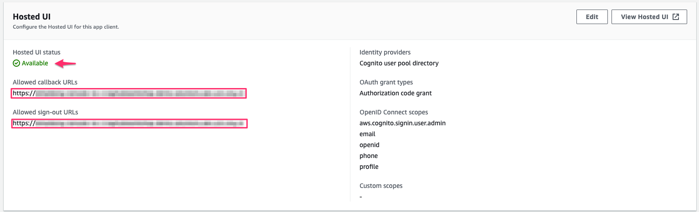

使用 OpenID Connect
部署时间：大约 30 分钟
前提条件
重要
日志通控制台通过 CloudFront 分发提供服务，该分发被视为 Internet 信息服务。 如果您在AWS 中国区域部署解决方案。域名必须有有效的ICP备案才能正常使用。
- 一个域名。 您将使用此域来访问日志通控制台。（AWS 中国区域必需，AWS 海外区域可选）
- 提供 AWS IAM 中的 SSL 证书，且必须与给定的域相关联。 您可以按照 本指南 将 SSL 证书上传到 IAM。（AWS 中国区域必需，AWS 海外区域不推荐）
- 在美国东部（弗吉尼亚北部）区域 (us-east-1) 中请求（或导入）ACM 证书。（AWS 中国区域无需，AWS 海外区域可选）
部署概览
使用以下步骤在 AWS 上部署此解决方案。
步骤 1. 创建 OIDC 客户端
您可以使用不同类型的 OpenID 连接器 (OIDC) 提供商。在本节中，我们将介绍选项 1 至 4。
- （选项 1）使用其他区域的 Cognito User Pool 作为身份验证提供者。
- （选项 2）Authing 是第三方身份验证提供者。
- （选项 3）Keycloak 是 AWS 维护的解决方案，可以作为身份验证提供者。
- （选项 4）ADFS 是 Microsoft 提供的一项服务。
- （选项 5）其它第三方认证平台，如Auth0。
按照以下步骤创建 OIDC 客户端，并获取 client_id 和 issuer。
(选项 1) 使用其他区域的 Cognito User Pool
- 在 AWS 海外区域登陆 Amazon Cognito 控制台。
- 按照此 指南 添加应用程序客户端并设置托管 UI。
- 对于 应用程序类型，选择 公共客户端。
- 请在填写 允许的回调 URL 和 允许的注销 URL 时，使用给日志通 控制台准备的域名。在您的 hosted UI 设置成功后，您可以看到如下状态： 
- 将
客户端 ID,用户池 ID保存到一个文本文件中，以备后面使用。

{kind=link}
在步骤 2. 启动堆栈中，OidcClientID 就是 客户端 ID, OidcProvider 是 https://cognito-idp.${REGION}.amazonaws.com/${USER_POOL_ID}。
(选项 2) Authing.cn OIDC 客户端
- 登录Authing 控制台。
- 如果您还没有用户池，先创建一个用户池。
- 选择用户池。
- 在左侧导航栏，选择应用下的自建应用。
- 单击创建自建应用按钮。
- 输入应用名称和认证地址。
-
将Endpoint Information中的
App ID（即client_id）和Issuer保存到一个文本文件中，以备后面使用。
-
将
Login Callback URL和Logout Callback URL更新为IPC记录的域名。 - 设置以下授权配置。

您已经成功创建了一个身份验证自建应用程序。
(选项 3) Keycloak OIDC 客户端
- 按照本指南 在AWS中国区域部署 Keycloak 解决方案。
- 确保您可以登录 Keycloak 控制台。
- 在左侧导航栏，选择 Add Realm。如果您已经有一个 Realm，请跳过此步骤。
-
进入领域设置页面。选择 Endpoints，然后从列表中选择 OpenID Endpoint Configuration。

-
在浏览器打开的 JSON 文件中，记录 issuer 值，以备后面使用。

-
返回Keycloak控制台，在左侧导航栏选择Clients，然后选择Create。
- 输入客户 ID，必须包含 24 个字母（不区分大小写）或数字。记录 Client ID，以备后面使用。
-
更改Client设置，在 Valid Redirect URIs 处输入
https://<日志通控制台域名>，在 Web Origins 输入*和+。 -
在 Advanced Settings 中, 请把 Access Token Lifespan 的值设置为5分钟或更长时间。
- 选择左侧导航栏的 Users。
- 点击 Add user，并输入 username。
- 创建用户后，选择Credentials，输入Password。
Issuer 的值的格式为 https://<KEYCLOAK_DOMAIN_NAME>/auth/realms/<REALM_NAME>。
(选项 4) 使用 ADFS OpenID Connect
- 确保您的 ADFS 已安装，您可以按照 本指南 了解如何安装 ADFS -部署指南。
- 确保您可以登录到 ADFS 登录页面。 URL 应为“https://adfs.domain.com/adfs/ls/idpinitiatedSignOn.aspx”，将 adfs.domain.com 替换为您的真实 ADFS 域。
- 登录您的域控制器，打开Active Directory 用户和计算机。
- 为日志通 用户创建一个安全组，将您计划的日志通 用户添加到此安全组。
- 登录 ADFS 服务器，打开 ADFS 管理。
-
右击Application Groups，点击Application Group，输入Application Group的名称。在Client-Server Applications下选择Web browser access a web application选项，点击下一步。
-
记录下此窗口中的 Client Identifier (
client_id)，在 Redirect URI 下，输入您的日志通域名（例如，xx.domain.com），然后单击 添加 ，然后单击下一步。 -
在 Choose Access Control Policy 窗口中，选择 Permit specific group，单击 Policy 部分下的 parameters，添加在第 4 步中创建的安全组，然后单击 下一步（您也可以根据您的要求配置其他访问控制策略）。
-
在摘要窗口下，单击下一步，然后单击关闭。
-
在 ADFS 服务器上打开 Windows PowerShell，并运行以下命令来配置 ADFS 以允许对您计划的 URL 进行 CORS。
Set-AdfsResponseHeaders -EnableCORS $true Set-AdfsResponseHeaders -CORSTrustedOrigins https://<your-centralized-logging-with-opensearch-domain> -
在 ADFS 服务器上的 Windows PowerShell 下，运行以下命令获取 ADFS 的颁发者（
issuer），类似于https://adfs.domain.com/adfs。Get-ADFSProperties | Select IdTokenIssuer
步骤 2. 启动堆栈
重要
在一个 AWS 账户的一个区域中，您只能部署一个日志通的堆栈。 如果您在部署中碰到了错误，比如没有满足前提条件， 请确保您删除了失败的堆栈，然后再重试部署。
-
登录 AWS 管理控制台并使用下面的按钮启动AWS CloudFormation 模板。
Launch in AWS Console 在海外区域新的 VPC 中部署 
在海外区域现有的 VPC 中部署 在中国区域新的 VPC 中部署 在中国区域现有的 VPC 中部署 -
登录控制台后，模板在默认区域启动。要在不同的 AWS 区域中启动日志通 解决方案，请使用控制台导航栏中的区域选择器。
- 在 创建堆栈 页面上，验证正确的模板 URL 显示在 Amazon S3 URL 文本框中，然后选择 下一步。
- 在 指定堆栈详细信息 页面上，为您的解决方案堆栈分配一个名称。有关命名字符限制的信息，请参阅 IAM 和 STS 限制 中的 AWS Identity and Access Management 用户指南。
-
在 参数 部分，查看模板的参数并根据需要进行修改。此解决方案使用以下默认值。
- 如果从新的 VPC 中部署, 此解决方案使用以下默认值:
参数 默认 说明 OidcClientId <需要输入>OpenId 连接器客户端 ID。 OidcProvider <需要输入>OpenId 连接器提供者发行者。发行者必须以 https://开头。Domain <可选输入>日志通 控制台的自定义域。切记不要添加 http(s)前缀。IamCertificateID <可选输入>IAM 中 SSL 证书的 ID。 ID 由 21 个大写字母和数字字符组成。您可以使用 list-server-certificates命令检索 ID。AcmCertificateArn <可选输入>美国东部（弗吉尼亚北部）区域 (us-east-1) 中请求（或导入）的 ACM 证书的 Arn。 - 如果从现有的 VPC 中部署, 此解决方案使用以下默认值:
参数 默认 说明 OidcClientId <需要输入>OpenId 连接器客户端 ID。 OidcProvider <需要输入>OpenId 连接器提供者发行者。发行者必须以 https://Domain <可选输入>日志通 控制台的自定义域。切记不要添加 http(s)前缀。IamCertificateID 可选输入>IAM 中 SSL 证书的 ID。 ID 由 21 个大写字母和数字字符组成。您可以使用 list-server-certificates命令检索 ID。AcmCertificateArn <可选输入>美国东部（弗吉尼亚北部）区域 (us-east-1) 中请求（或导入）的 ACM 证书的 Arn。 VPC ID <需要输入>选择现有的VPC。 Public Subnet IDs <需要输入>从现有的 VPC 中选择2个公有子网。子网必须有指向 Internet Gateway 的路由。 Private Subnet IDs <需要输入>从现有的 VPC 中选择2个私有子网。子网必须有指向 NAT Gateway 的路由。 重要
Domain, IamCertificateID, AcmCertificateArn 三者关系如下：
- 若您在AWS 中国区域部署解决方案，则必须输入 Domain, IamCertificateID。
- 若您在AWS 海外区域部署解决方案：
- 若需要自定义域名，则必须输入 Domain, AcmCertificateArn。
- 若无需自定义域名，则保持 Domain, IamCertificateID, AcmCertificateArn 为空。
-
选择下一步。
- 在 配置堆栈选项 页面上，选择 下一步。
- 在 审核 页面上，查看并确认设置。选中确认模板创建 AWS Identity and Access Management (IAM) 资源的复选框。
- 选择 创建堆栈 部署堆栈。
您可以在 AWS CloudFormation 控制台的 状态 列中查看堆栈的状态。您应该会在大约 15 分钟内收到 CREATE_COMPLETE 状态。
步骤 3. 配置 DNS 解析
此解决方案预置 CloudFront 分配，让您可以访问日志通控制台。
- 登录 AWS CloudFormation 控制台。
- 选择解决方案的堆栈。
- 选择输出选项卡。
- 获取WebConsoleUrl 作为解析地址。
- 在 DNS 解析器中创建 CNAME 记录，指向该解析地址。
步骤 4. 登录控制台
重要
您的登录凭据由 OIDC 提供商管理。 在登录日志通 控制台之前，请确保您已在 OIDC 提供商的用户池中创建了至少一个用户。
- 使用网页浏览器打开DNS解析器中创建的CNAME记录。
- 选择 登录 Centralized Logging with OpenSearch，然后导航到 OIDC 提供商。
- 输入用户名和密码。 您可能会被要求更改首次登录的默认密码，这取决于您的 OIDC 提供商的政策。
- 验证完成后，系统打开日志通网页控制台。
后续操作：登录日志通 控制台之后，您可以 导入 Amazon OpenSearch Service 域 并构建日志分析管道。